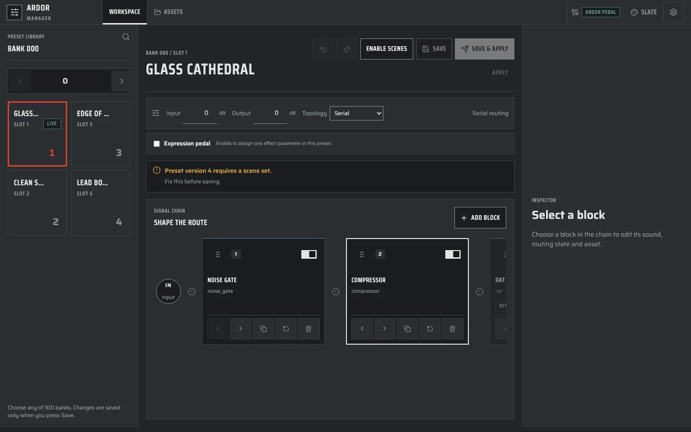
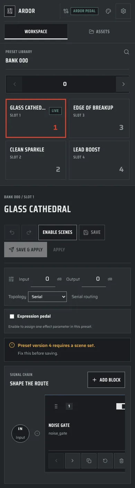

Five working mockups for a full rebuild of the manager UI. All five use the Lamp Black language of the pedal and the website. The chain looks like the touch screen: the same cards, family caps, insert points and bypass hatch. In every mockup you can drag blocks to reorder them.
The mockups differ in structure: where the presets live, where you edit, and how scenes work. Open each one and use it. Drag a block, turn a value, open the module drawer, switch presets, try a phone.
The current manager

Current workspace at 1440 × 900, with a nine-block preset. Captured from apps/manager with a mocked API.

The same view at 390 px wide.
The chain shows 2.5 of 9 blocks
At 1440 px wide, the chain panel shows two full cards. Everything else scrolls sideways inside a box.
Cards carry no sound
A 256 px card shows a name and an internal mode id (noise_gate), but no value. The pedal card shows two values.
No family colour
Every block looks the same. The pedal gives each family its cap colour, so you find the delay without reading.
A quarter of the width is empty
The inspector column says “Select a block” until you select one. Its space is lost in the most common view.
Four ways to save
Enable scenes, Save, Save & apply, and a text-only Apply sit side by side. The difference between them is not clear.
An error with no fix
“Preset version 4 requires a scene set. Fix this before saving.” The panel gives no button that does the fix.
Truncated preset names
“GLASS...”, “EDGE OF ...”. The preset grid is 270 px wide, so names cut off. The bank picker is a number field that reads 0.
Bank numbers differ from the pedal
The manager says BANK 000 / SLOT 1. The pedal says BANK 01 and FS 1. One thing, two names.
Five small buttons per card
Left, right, copy, reset and delete, without labels, on every card. Reorder also works by drag, so the arrows repeat it.
The phone hides the chain
On a phone the chain starts about 1100 px down the page, after the library, the header and three settings strips.
What all five keep
The device cardFamily cap, name, two main values with bars, hatch and OFF when bypassed. Selected card lifts on a hard plate, as on the pedal.
Drag to reorderDrag a cap with a mouse. Long-press on touch. Alt and the arrow keys move the selected block. Dual Rig lanes take drops too.
One lampLamp red means live: the live preset, the live scene, the control that the wheel or arrows turn. Buttons never turn red.
Module drawerGrouped by family with code squares, the same as the pedal. It says when a new block turns another off, because one delay, one reverb and one modulation block run at a time.
Audition, then saveWith audition on, you hear each change on the pedal. Save writes the slot. The header always says if the preset open is the one on the pedal.
Honest fixed partsThe −1 dBFS safety limiter shows as fixed protection, not a control. The connection pill always says HTTP, for trusted networks only.
Same names as the pedalBANK 01, FS 1 to 4, block, chain, lane, scene. Parameter labels, ranges and units come from catalog.v1.json.
Undo everywhere⌘Z and ⇧⌘Z for every edit: values, moves, deletes, slot swaps. Delete shows a toast that says how to undo.
The pedal edit screen at desk size. The chain is the stage. Open a block and the chain folds into a chip strip while the parameter drawer takes the stage, as on the pedal.
Presets
A bank bar with the four slots above the stage.
Editing
Big device cards, then a drawer with large controls and a context rail for the focused control.
Try
Click Tape Delay and watch the chain fold into chips. Drag a chip. Press Done or Esc.
Assets
An Assets view in the same grammar: kind tiles for NAM models, cabinet IRs and reverb IRs, the file list as the stage, a drawer per file. It shows which presets use a file, flags presets with a missing file, and has Try in preset. Drop files anywhere to upload.
Risk
Two modes. You cannot see all cards and all values at the same time.
The rack with the covers off. Every block is open at once, with all its controls, left to right. There is no inspector and no drawer. You change a value where you see it.
Presets
A shelf with the bank and four slots, next to the scene scope and undo.
Editing
Tall block modules with every parameter. The chain ends in an Output module with I/O, limiter and EXP.
Try
Drag a colour in the mini-map at the bottom to reorder. Open Bank 02, Wide Stereo for the Dual Rig lanes.
Risk
Dense. A long chain scrolls sideways, and the mini-map must carry the overview.
The library is the home screen. Every bank is a row of four device tiles with their chain strips. Open a tile and it pulls out of the wall into an editor, right under its own bank.
Presets
All banks at once. Drag a tile onto any slot to swap. Search by preset or block name, filter by family.
Editing
Inline, under the bank row: the chain, then compact controls for the selected block.
Try
Type shimmer in the search. Drag Lead Boost onto a Bank 02 slot. Name a bank.
Risk
Editing space is smaller than in the other four. It suits setlist work more than deep tone work.
The chain is the column head, the scenes are the rows. One look answers “what changes when I press FS 3?”. EXP pedal and MIDI CC sit in the same grid as control lanes.
Presets
From the app bar. This view is about one preset and its scenes.
Editing
Pick a cell to edit that block in that scene. A changed value gets a SCENE mark and a clear button.
Try
Click the Solo × Tape Delay cell and turn Mix. Press Recall on a scene. Drag a column cap.
Risk
Best for presets with scenes. For a plain preset, the grid has one useful row.
Tone work with one hand on the guitar. One block fills the stage at the scale of the pedal parameter screen. The mouse wheel turns the control under the pointer, like the encoder.
Presets
A side column with the four footswitch tiles (1 and 3 over 2 and 4) and the scene scope.
Editing
Large controls, A/B compare per block, a trail of recent changes, and a command bar.
Try
Press ⌘K and type delay mix. Point at a control and scroll. Press [ and ] to step through the chain.
Risk
You see one block at a time. The chip strip is the only view of the whole chain.
The directions also combine. For example, the Bank Wall can be the library of any of the other four, and the Scene Grid can be a Scenes tab next to any editor.
Demo data. Preset names, NAM and IR file names, values, scenes and MIDI mappings are synthetic. Block names, families, parameter labels, ranges and the one-enabled rule come from apps/manager/src/effects/catalog.v1.json. Nothing is sent to a pedal. Changes live in memory and reset on reload.